Suma teacher and her students are preparing to transplant the vegetable seedlings they had sown. “Children, water the pits well and uproot the saplings carefully without breaking their roots" said the teacher to the children. The children examined the saplings to check whether the roots were damaged. “Teacher, the roots of the vegetable saplings and the muthanga growing between them are not similar, are they?” Bibeesh asked.
Page 19
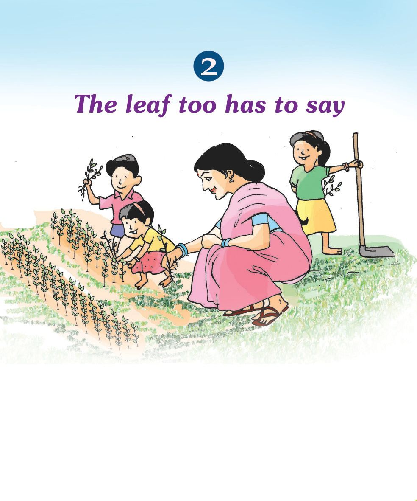
Page 20

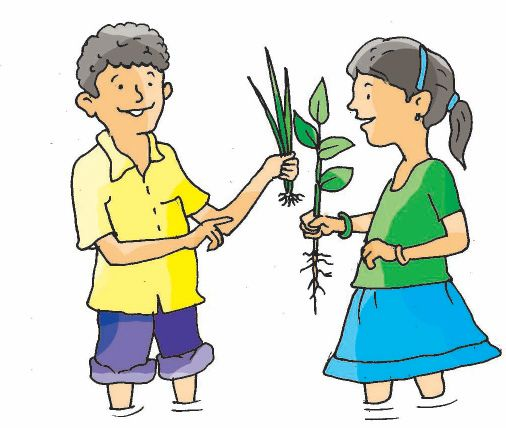
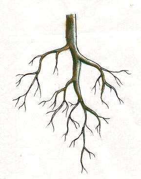
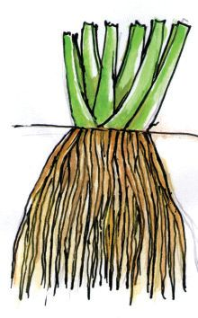
What are the differences Bibeesh would have noticed? Try to write them down. Go for an 'ecowalk' with your friends. Collect different types of plants. Examine the plants and observe their roots carefully. Note down the peculiar features of each of them in your environment diary. Show this to your friends and discuss. Draw pictures too.
Misna’s observation notes In one group of plants, a thick main root is seen growing from the base of the stem. Several smaller roots have grown from that root. The thick root is long.
In another group of plants, several roots have grown from the base of the stem. All roots are similar. The roots are thin.
Read the notes. Compare them with your observation notes. How many types of roots did Misna observe? How many types of roots could you identify?
Environmental Science
Tap root system and Fibrous root system
Observe Figure 1. Were there similar roots among the roots you observed?
20
Figure 1
Figure 2
Tap root system
Fibrous root system
Page 21

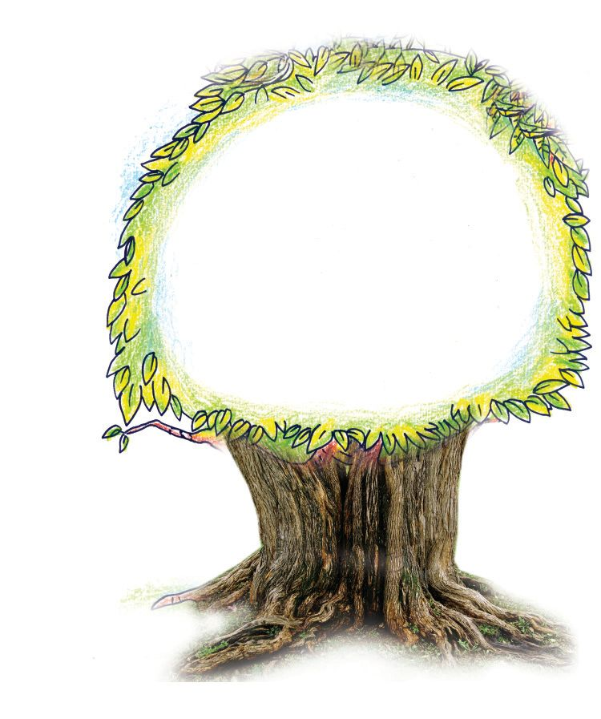
What are the differences between the two roots shown in the figure? Note down the differences in the environment diary. Observe the root system in Figure 1. Don't you see a large root growing down from the stem? This root is called the tap root. Other small roots grow from this root. The tap root system consists of the larger tap root and the smaller branches growing from it.
Examine Figure 2. You may have noticed such roots during an ecowalk. How is it different from the tap root system you just read about? Do you see a thick main root in this root system? Is there any difference in shape and size between the roots in it?
The tap root system grows more deeply. Hence these roots hold the plant firmly in the soil.
Observe and find out from where these roots arise.
The fibrous root system includes a cluster of similar roots growing from the base of the stem.
21
The leaf too has to say
Record these observations in the environment diary.
Page 22

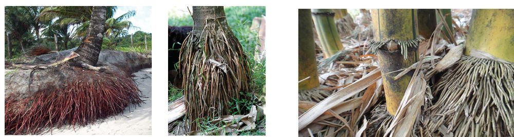
Let us try to find out some plants that have fibrous root system.
Coconut tree
Arecanut palm
Bamboo
List the differences between the tap root system and the fibrous root system in your environment diary.
Tap root system
Fibrous root system
Draw the picture of the tap root system and the fibrous root system based on your observation. "Teacher, the leaves of the plants we observed are also not similar," Bibeesh pointed out to Suma teacher. What differences do you see?
Environmental Science
Let us observe “While you observe the shape and size of the leaf, also take note of the peculiarity of their vein – like structures. Don’t forget to record the differences in the environment diary,’’ said the teacher. 22
Page 23

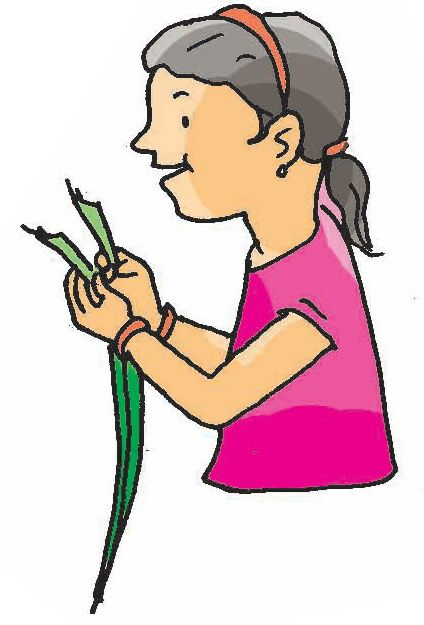
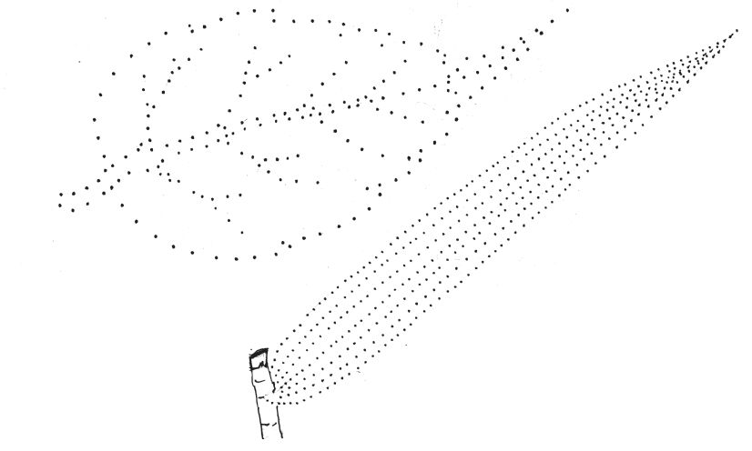
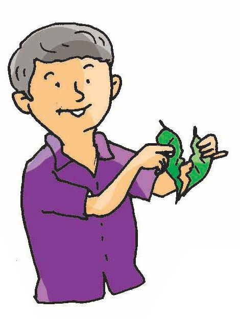
Notice the pattern of the leaves in the picture. Complete the picture by joining the dots, starting from the leaf stalk.
Figure 3
Figure 4
Can you see the veins of the leaves clearly? What differences did you notice between the two leaves? Write them down in the environment diary. Try to tear a mango leaf, a jack tree leaf, a coconut palm leaf and a bamboo leaf into several long pieces downwards from the tip. Could you tear all the leaves easily without breaking them? Which of these leaves could you tear into long pieces? Which of them you could not tear into long pieces?
Examine the veins of the leaves. Draw the veins in the leaves as they appear, in the environment diary. 23
The leaf too has to say
Classify them and write.
Page 24


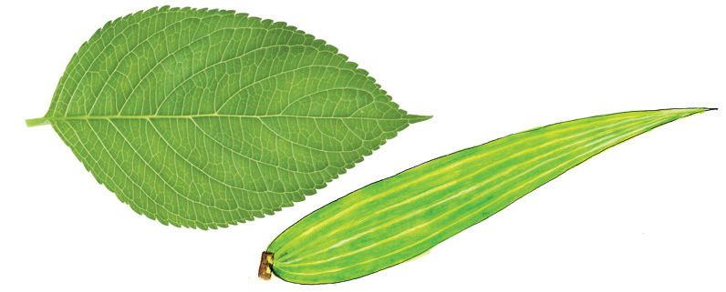
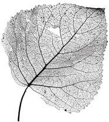
Reticulate venation and parallel venation
Figure 5
Figure 6
Did you see the veins lying interconnected in the leaves you observed and the pictures you drew as in Figure 5?
Now look at the main vein in the middle of the leaf, starting from the leaf stalk to its tip. Did you notice many small branches arising from the main vein, connected to one another like a network? The network - like venation in leaves is called reticulate venation.
Were there leaves with veins as in Figure 6, among the leaves you observed? Notice how the venation in such leaves differs from reticulate venation.
Environmental Science
Note down the differences in the environment diary. The veins in the leaves, do not touch one another. Starting from the leaf stalk, they run parallel and join at the tip of the leaf. The parallel arrangement of veins in leaves is called parallel venation.
Note down the differences between reticulate venation and parallel venation in the environment diary. 24
Page 25

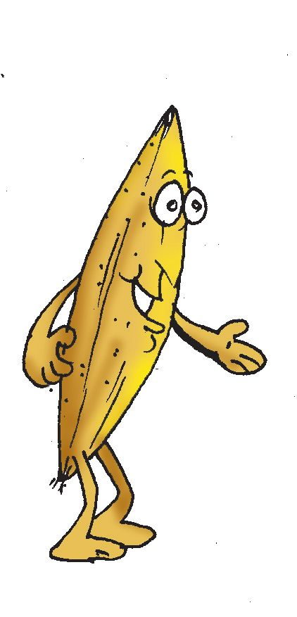
Venation and Root system Tabulate the root system and venation of the plants we observed. Name of the plant
Root system Tap root
Fibrous root
Reticulate
Coconut tree Mango tree
Venation
Parallel
Now study the table carefully and find out the relation between root system and venation and write it down. Observe the leaves of the big and small plants around you and record the type of root system of these plants.
Autobiography of a paddy grain
What could be the changes that occurred? 25
The leaf too has to say
KT 85 -4/EVS-4(E) Vol-1
I was born as the daughter of a group of mothers who lived happily. There were many of us on mother’s grain stalk. Some of us were eaten by a pest 'Chazhi.' The rest of us grew up strong and ripened. Farmers reaped our mothers, who bore us bright and golden in their hands, threshed and cleaned them. It was from there that I reached Arun’s house. When we were laid in the sun on a mat, to dry, I was scattered to a corner in the yard. With the summer rain, I started changing all over.
Page 26

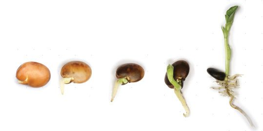
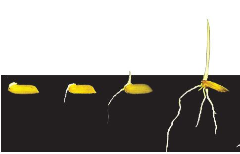
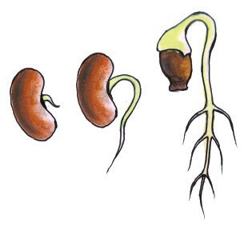
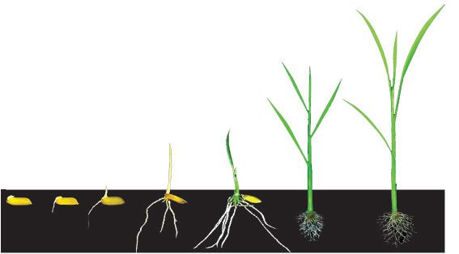
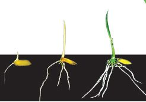
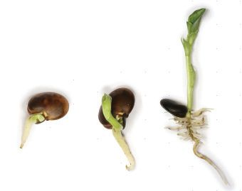
Observe the pictures.
Different stages of germination of a paddy grain.
Different stages of germination of a pea seed.
Which part of a plant comes out first from a germinating seed? What did that part which came out first from the seed, form into? Observe the pictures and write.
Plumule Radicle
Did the part that came out first grow into root? The part that comes out first from the seed is called radicle. The part that comes out after the radicle, becomes the stem of the plant.
Environmental Science
Observe the pictures.
It is the plumule that grew into the stem. 26
Page 27

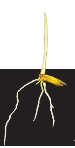
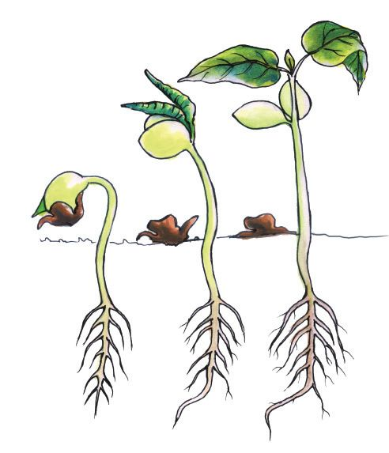
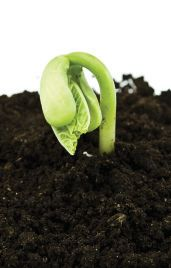
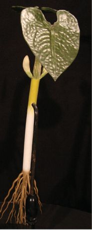
From where did the radicle and the plumule get food to germinate? Have you thought about this? Didn’t you see the radicle and the plumule in the picture? Which is the part seen besides these?
Cotyledons
The thick leaf – like part seen in the plumule of the germinating pea seed is the cotyledon. The food required for a seed to germinate, is stored in the cotyledons.
The plant uses the food in the cotyledons. So the cotyledons shrink and decrease in size as the plant grows. The plant grows using the food in the cotyledons till it prepares its own food. Do you see two cotyledons in a paddy grain also? There is only one cotyledon in the paddy grain.
Plants having two cotyledons are called dicotyledonous plants (dicots).
What are the changes that occur when a seed germinates? Don't you want to know this? 27
The leaf too has to say
Plants having only one cotyledon are called monocotyledonous plants (monocots).
Page 28

Germinate a few seeds of paddy, pea, groundnut, wheat, thina (fox tail millet) and maize. Observe them for two weeks. Note down their changes daily in the environment diary .
The outer part of the stem of monocot plants is harder than the inner part. But in dicot plants, the inner part is harder.
Which are the plants that have one cotyledon and those that have two cotyledons? List them. Let us now create a table showing the root system, venation and number of cotyledons of the plants we observed. Plant
Root system
Venation
Number of cotyledons
Study the table carefully and find out the relation between the root system, venation and number of cotyledons of plants. Record it in the environment diary.
Significant learning outcomes The learner
Environmental Science
28
identifies the peculiarities of the root system of plants and classifies them into fibrous root system and tap root system. observes and lists venation of leaves and classifies them into reticulate venation and parallel venation. identifies and states the relationship between venation and root system of plants around. defines monocotyledonous and dicotyledonous plants. engages in simple projects on the relationship between venation in leaves, root system and the number of cotyledons. Prepares project reports accordingly.
Page 29

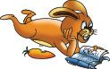
Let us assess 1.
Identify the odd one and circle it. a. coconut root, bamboo root, mango root, arecanut root b. banyan leaf, teak leaf, jack tree leaf, paddy leaf c. maize, wheat, cashew, thina
2.
Match the following radicle monocotyledon plumule dicotyledon
: : : :
bamboo root groundnut stem
3.
Explain the differences between the root system of plants.
4.
Observe the leaves of a mango tree, jack tree, bamboo, paddy, teak and coconut tree and classify them into two based on venation.
5.
How will you distinguish between monocots and dicots?
6.
Give examples of monocotyledons.
Extended activities
Collect dried root systems of different kinds of plants and make an album. Collect dried leaves that show venation clearly and make an album. Write a short note on the diversity among plants, identified by you during your 'ecowalk'. Collect seeds and classify them into monocots and dicots. Remove the green colour in leaves so that the venation can be seen clearly, and make an album (Discuss with your teacher for details).
29
The leaf too has to say